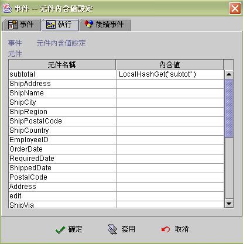

|

元件內含值設定 (component data setting)
事件執行狀態與訊息 (event runtime status and message)
設定元件內含值事件 (component data setting)，可讓元件擁有程式化的動態計算式，使得程式設計更為靈活。
以滑鼠雙擊
(double clicked)【內含值】，在運算式編輯視窗 (formula design pane)
中，輸入運算式或常數(constant)，作為該元件新的內含值(如下圖)。在程式實作時，亦可使用功能相同的運算公式：SetProp(ComponentName,"text",Value)、SetData(ComponentName,Value)，取代此事件。(例：SetProp("subtotal","text",LocalHashGet("subtotal")))

下面的表格列出設定各種元件內含值時，應注意的細節：
|
元件類別 |
顯示與動作 |
| 編輯方塊(Edit) |
顯示運算式結果或常數值 |
| 核取方塊(Checkbox) |
依核取條件顯示核取或不核取 |
| 選擇鈕(Radiogroup) |
依選取條件顯示選取或不選取 |
| 清單方塊(Listbox) |
1).【關連】選擇資料來源
/ 欄位：
資料欄位存在相等於元件內含值的記錄，則該列顯示為選取列(selected
row)，否則為未選取狀態。
2).【關連】選擇純字串：
選擇項目文字存在相等於元件內含值的記錄，則該列顯示為選取列(selected
row)，否則為未選取狀態。 |
| 下拉式清單方塊(Combobox) |
1).【關連】選擇資料來源
/ 欄位：
資料欄位存在相等於元件內含值的記錄時，則顯示顯示運算式，否則元件變成空白。
2).【關連】選擇純字串：
選項文字存在相等於元件內含值的記錄時，則顯示該選項文字，否則元件變成空白。 |
| 計數器元件(Slider) |
內含值須為數值，計數器會顯示相對的刻度。 |
| 備忘錄元件(Memo) |
顯示運算式結果或常數值 |
| 索引標籤元件(Tab) |
內含值須為整數值(integer)，索引標籤會切換至該標籤頁 (由 1 起算)。 |
| 條碼元件(Barcode) |
顯示運算式結果或常數值相對的條碼。 |
▲Top
事件執行狀態與訊息 (event runtime status and message)
EvStatus("事件名稱") ：取得事件執行狀態。
|
回傳值 |
狀態 |
| 空字串 |
事件未被引發。 |
| -1 |
事件啟動後，依條件判斷後執行否則事件。 |
| 1 |
事件啟動後，執行成功。 |
| 0 |
事件啟動後，執行過程有誤。 |
EvStatus("事件名稱.error") ：取得事件執行錯誤代碼。
|
回傳值 |
說明 |
| 空字串 或 0 |
沒有錯誤訊息或無法取得錯誤訊息。 |
| 1 |
元件名稱不存在。以 EvStatus("事件名稱.name")
取得其名稱。 |
EvStatus("事件名稱.INFO_STRING") ：取得事件執行
INFO_STRING 的訊息。
|
INFO_STRING |
回傳值 |
說明 |
| name |
元件名稱 |
不存在的元件名稱。 |
▲Top
Copyright © 2001~
2004 Probe Technology Inc. . All Rights Reserved.
Questions, comments,
and suggestions to Service@probe.com.tw
|